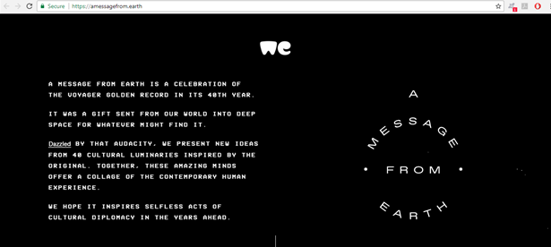

https://amessagefrom.earth/ this web site inspired me to create my web page with a black background using white fonts, i think it looks awesome

To start off my project i was looking through the background colours and font themes to use, my group helped me out with the font themes.I was considering to use a fancy theme however they have warned me to use a formal font theme to make it look more serious.I have liked the web page with a black background with white fonts, i have implemented that to my web page with an addition of red effects.I have liked the idea of dividing page into 3 segments and adding hyperlinks to team members and opening their tabs on the bottom segment, i like this feature of my web page the most.My friends also recommended me to add more animations to my web page so i did use Adobe fireworks cs5 to add a photogalery and a web design animation.I have used a pretty simple navigation bar adding the pages necessary for project to navigation bar segments.